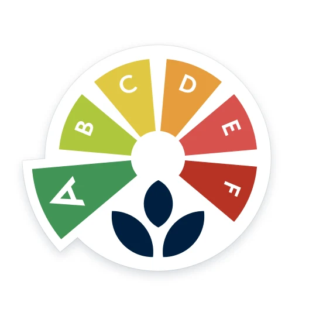

Da giovedì il programma degli interventi di dicembre sarà consultabile per ogni comune delle zone di compensazione.
LeggiIl clima cambia, MAMMA ti informa.
MAMMA programma il meteo per proteggere il patrimonio agroalimentare italiano. Cerca il tuo comune e scopri cosa succede oggi da te.
Prova con Milano, Genova o Pachino
Oggi in Italia
Apri la mappa completaServizi per cittadini e imprese
Preavvisi nel tuo comuneRicevi un avviso 72 ore prima di ogni intervento programmato, via app, email o SMS.Attiva i preavvisi
Verifica un prodottoInserisci il lotto o inquadra il QR sull’etichetta per conoscere la storia climatica del prodotto.Verifica
Segnalazioni e reclamiSegnala un problema legato a come è stato eseguito un intervento nel tuo comune.Segnala
Area riservataPer produttori e distribuzione. Calendario di zona, protocolli, contributi e certificazioni.Accedi
Come si legge il bollino
Sull'etichetta di frutta e verdura trovi una lettera. Ti dice quanta protezione climatica ha avuto quel prodotto prima di arrivare sul banco.
Scopri le classi
MAMMA in numeri
- 412.000
- ettari coltivati sotto protezione
- 1.240
- interventi programmati nel 2037
- 99,6%
- interventi riusciti
- 72 ore
- di preavviso medio
Notizie e comunicati
Grazie agli specchi solari la raccolta autunnale si è svolta senza interruzioni in tutte le aziende della zona.
LeggiLe aziende agricole delle zone di compensazione possono presentare domanda dall’area riservata entro il 31 gennaio.
Leggi